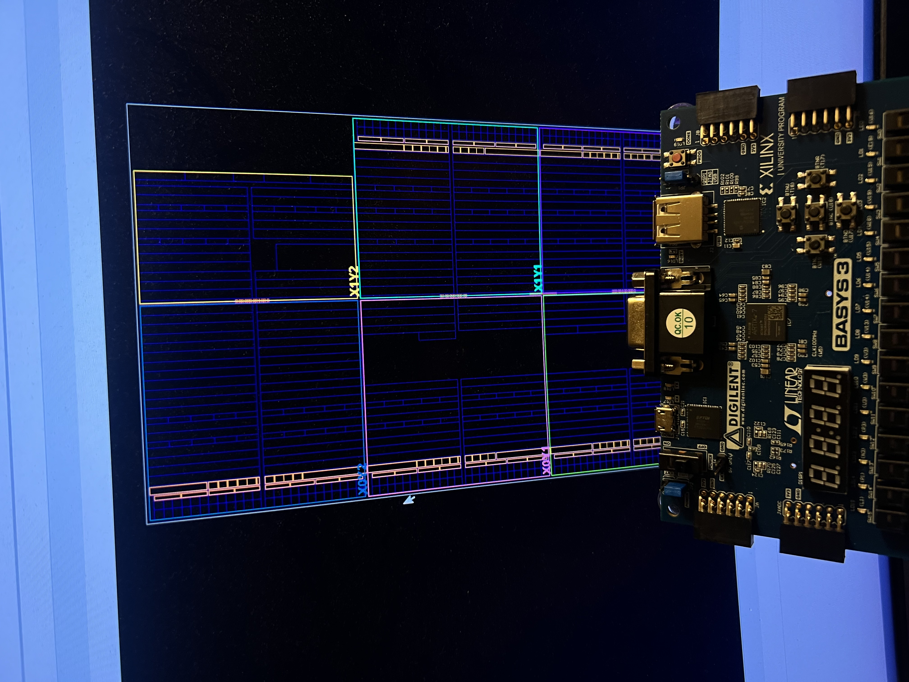

Learning digital design from the bottom up
This project starts with intentionally small RTL blocks—counters, registers, combinational logic, state machines, and testbenches—before combining those fundamentals into a processor architecture.

Long-term architecture
The larger goal is a custom RISC-V-based management processor developed through Verilog, assembly programs, simulation, FPGA verification, and progressively more complete CPU subsystems. This project is also my bridge into deeper computer architecture topics such as pipelines, memory systems, buses, instruction sets, and SoC design.
Next project Cyberdeck → Custom Phone →